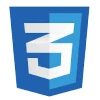

.svg)
.svg)
.svg)
.svg)
.svg)
.svg)
.svg)
.svg)

About
Technology
Methodology
Pricing
Contact
If you've got an idea, we can make it Xplode into...
a
SaaS Product
with good ARR
a
Productivity Tool
for your team
a
Marketplace
connecting consumers and providers
VC Funding
for your startup idea
returning
Customers
for your online business
AI Workflows
to achieve the previously impossible
We're a high-performance software development team. We build apps fast — using No-Code and AI Tools.


We can build MVPs and apps
In a matter of weeks rather than months
Thanks to no-code and AI tools — and our expertise in using them
Build rapidly
No-code & AI tools offer unprecedented development speed. So you can iterate fast → build features fast → launch fast → and accommodate user feedback fast!
Validate quickly
You can directly launch your app to test the waters — no need for market study or even wireframes. Validate your idea and grow — or pivot! Sooner is always better than later.
Save continuously
Save cost on team size, dev time and technical overheads (one platform can handle everything). We can help you hit the market with minimal resources. You can pivot before spending too much.
Take the One-Week Challenge!
Want to see what ideaXplode can build for you in a week's time? Pay for it only if you want to continue with the project. Some terms and conditions apply.
Experience the power of no-code & AI — cut your development cost upto 70%!
How do we build?
Technology has evolved. So have we.
Welcome to the modern software development paradigm
No-Code
No-code tools have changed the game for software development. From design to deployment, everything comes out of the box in a single platform. Mature no-code tools enable building even complex applications.
Low-Code
When we try to build custom experiences using no-code tools and hit platform's limits, having coding expertise will keep us flying. Low-code grants unlimited extensibility of the no-code platform.
AI-Code
AI-Code is not "vibe coding". Vibes simply cannot produce production-grade applications. Through a systematic, AI-native methodology, we make sure your software is secure, stable and scalable.
AI-Build
You describe what you want, and the AI builder generates an app. Sounds simple. But real-world applications bring unexpected challenges: bugs, security gaps, or ambiguous behavior.





So, what's the best tech stack?
No-Code + AI is the future of building software!
Want to find out the best tech choices for your app?
What do we build?
We build solutions to solve your problems
We'd love to ease your pain points through technology
DELIGHTFUL
Web Apps
Web apps can act as the centralized backend for all your operations — with or without an UI
SLEEK
Mobile Apps
Mobile apps increase user engagement with better access to user data and device controls
NATIVE-LIKE
Mobile Sites
Let new users experience your service instantly without installing anything — say, from a QR
SMART
AI-Powered Apps
Applications with embedded AI to provide smarter, interactive experiences to users
INTELLIGENT
AI Agents
Autonomous AI agents capable of executing tasks and understanding user intents
CUSTOM-TRAINED
AI Models
Custom-trained machine learning models tailored to solve specific business problems.
With the power of no-code and AI, you can build your own custom apps for your business — instead of paying for pre-built SaaS apps!
What's our methodology?
Agentic Agile: Having Agile foundations, but driven by AI agents
We follow core Agile principles and practices — but with AI agents augmenting in every step of the process
Our methodology comprises a team of agentic Agile role players — right from a Business Analyst to a Delivery Manager. This agentic team, along with human developers, builds your software systems with precision and control. This agentic methodology significantly reduces the human role players needed to develop advanced systems.
The journey of a feature:
Idea
(
/
)
User Story
(
+
)
Build
(
+
)
Test
(
)
Launch
(
+
)
Feedback
(
)
Our promises:
With Agentic Agile, startup founders could see their product evolve in real time, iteratively.
Who are we?
ideaXplode is an ambitious startup
..that helps you navigate the complex maze of modern tech
We started ideaXplode to help ideators, innovators and startup founders to enter into and succeed in this brave new world of AI. This is the dawn of a new age where we and the machines co-exist. From this point on, we and the machines will be creating the future together. We want to help you solve the problems that crop up in this new age.
Meet the founder & CEO: Rathan

Hi, I’m Rathan — a developer at heart and an entrepreneur by trade. After 20+ years of building software the traditional way, I now help startups launch products at never before speeds using no-code and AI. Through ideaXplode, I love turning bold ideas into real, working apps.
Rathan is a serial tech entrepreneur who has served 80+ clients globally — in the US, Europe, Australia and Asia. If there's one thing that Rathan considers to be his core strength after donning almost all the roles in software engineering, it's being a visionary product engineer. In this AI era, product engineering is the most valuable skill.
❝ I have worked with numerous offshore software consultants but Rathan's team is at least 100 times better. ❞
? Philip Bradley
CTO, Lencomms Inc.
You can think of us as your innovation partner — as you lead your organization into AI transformation.
What are our pricing options?
Transparent, predictable pricing — no surprises
Choose the option that suits your budget and roadmap
Fixed pricing
• Frozen requirements •
• Estimated cost •
• Some buffer for contingency •
• Milestone-based feedback •
• Minimal reporting •
Flexible pricing
• Flexible requirements •
• Actual cost •
• NO buffer •
• Daily feedback •
• Comprehensive reporting •
Hybrid
Start with fixed pricing and move on to flexible as your product shapes up.
Want to know our rates or get an estimate?
Our productized service model helps you save money and launch faster!
Feel free to reach out to us!
Want to see an app demo?
We can share the credentials of an app that we had built — for you to try.
Want to sign an NDA?
If you prefer to sign an NDA with us before discussing your idea, we can get it done in 48 hours.
Want to join our team?
We have developer and intern positions open. If you think you have a problem-solving mindset and are willing to take up challenges as part of the interview process, please send in your resume — let's get the conversation started.

ideaXplode is a No-Code + AI software development studio that helps founders launch real, market-ready apps in weeks, not months.
Made with ❤️ by ideaXplode © 2025
Links
About
Technology
Methodology
Pricing
Contact us
ideaXplode Technologies
#200, I Floor, 3rd Main Road,
C L R I Nagar, Neelankarai,
Chennai - 600115, India.
C L R I Nagar, Neelankarai,
Chennai - 600115, India.
Map location
holaideaxplode.com
+91 6383-9530-22